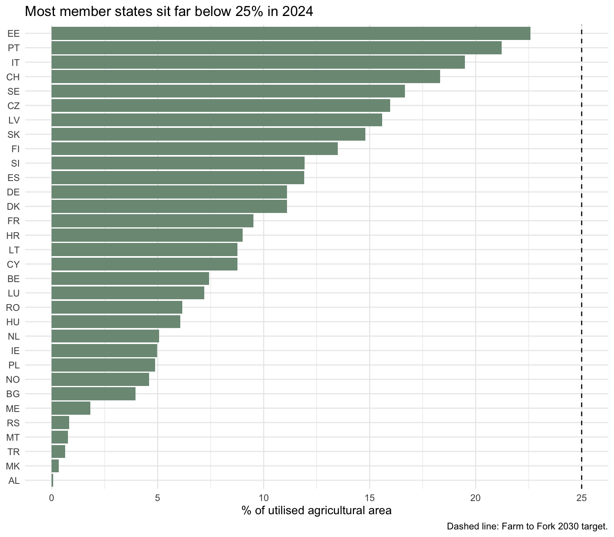

A spatial analysis of organic area as a share of agricultural land
Author
Christopher Jr Galgo
Published
August 13, 2026
1. Business question
The EU Farm to Fork strategy targets 25% of agricultural land under organic production by 2030. Progress varies widely between member states. This analysis asks: where does organic farming concentrate, how fast is each country moving, and which countries will miss the target on current trends?
The spatial dimension matters here. Organic adoption clusters geographically, and clusters suggest shared drivers such as policy regimes, consumer markets, or agronomic conditions.
2. Packages and data discovery
Show code
# One-time install (run in the console, not here):# install.packages(c("eurostat", "sf", "giscoR", "tidyverse",# "scales", "knitr"))library(eurostat) # Eurostat data + NUTS boundarieslibrary(sf) # simple features: the standard spatial class in Rlibrary(tidyverse)library(scales)library(knitr)
Eurostat retires and renames datasets. Rather than hard-coding a code and hoping, find it:
Show code
# Set eval: true above to run this once. It searches dataset titles.search_eurostat("organic") |>select(title, code) |>head(20)
We use sdg_02_40, the SDG indicator for area under organic farming.
Show code
organic_raw <-get_eurostat("sdg_02_40")
indexed 0B in 0s, 0B/s
indexed 1.00TB in 0s, 6.41PB/s
Show code
# ALWAYS inspect before filtering. You cannot filter columns you have# not looked at.glimpse(organic_raw)
# What units and categories does this dataset contain?organic_raw |>count(unit) |>kable(caption ="Units available in the dataset")
Units available in the dataset
unit
n
PC_UAA
746
Show code
# Defensive step: eurostat renamed its time column across versions.# This works either way, and documents the problem for whoever reads# your code later.time_col <-intersect(c("TIME_PERIOD", "time"), names(organic_raw))[1]organic <- organic_raw |>rename(year =all_of(time_col)) |>mutate(year =as.integer(format(as.Date(year), "%Y"))) |>filter(unit =="PC_UAA") |># percent of utilised agri. areafilter(!is.na(values))# If the unit filter empties the table, the code above is wrong for the# current data. Check the unit table printed in the previous chunk.cat("Rows retained:", nrow(organic),"| Years:", min(organic$year), "to", max(organic$year), "\n")
Rows retained: 746 | Years: 2000 to 2024
3. Joining data to geometry
Show code
# NUTS level 0 = countries. This call uses the copy bundled inside the# eurostat package, so it needs no download.nuts0 <-get_eurostat_geospatial(output_class ="sf",resolution ="60",nuts_level =0,year =2016)# An sf object is a data frame with a geometry column attached.# Everything you know from dplyr still works on it.class(nuts0)
[1] "sf" "data.frame"
Show code
latest_year <-max(organic$year)map_data <- nuts0 |>left_join( organic |>filter(year == latest_year),by ="geo"# NUTS code, e.g. "FR", "DE" )# Report the join quality. Silent join failures are the most common# error in spatial work, and reviewers look for this check.n_matched <-sum(!is.na(map_data$values))cat(n_matched, "of", nrow(map_data), "geographies matched.\n")
32 of 37 geographies matched.
4. Projections
Show code
# Raw NUTS data arrive in EPSG:4326 (longitude/latitude on a sphere).# That projection distorts area badly at European latitudes: Finland# looks far larger than it is.st_crs(map_data)$epsg
[1] 4326
Show code
# EPSG:3035 (ETRS89-LAEA) is the EU's official equal-area projection.# Use it whenever you map Europe. This single line separates maps that# look professional from maps that do not.map_proj <-st_transform(map_data, crs =3035)
5. Finding 1: Organic farming concentrates in the Alpine and Nordic band
Figure 1: Organic area as a share of utilised agricultural area
Write your own reading of this map here, in two or three sentences. Name the leaders, name the laggards, and resist explaining the pattern before you have tested it. Description first, interpretation second.
YOUR TURN 1: Remove the st_transform() line and render again. Compare the two maps. Write one sentence on what changed and why it matters.
6. Finding 2: Distance from the 25% target
Show code
target <-25gap <- organic |>filter(year == latest_year, nchar(geo) ==2, geo !="EU27_2020") |>mutate(gap_to_target = target - values,reached = values >= target ) |>arrange(desc(values))ggplot(gap, aes(x = values, y =reorder(geo, values), fill = reached)) +geom_col() +geom_vline(xintercept = target, linetype ="dashed") +scale_fill_manual(values =c("FALSE"="#7c9885", "TRUE"="#2c5f4a"),guide ="none") +labs(x ="% of utilised agricultural area", y =NULL,title =paste("Most member states sit far below 25% in", latest_year),caption ="Dashed line: Farm to Fork 2030 target." ) +theme_minimal()

Figure 2: Gap to the Farm to Fork 2030 target of 25%
YOUR TURN 2: The country codes are hard to read. Use label_eurostat() from the eurostat package to attach country names, then redraw this chart.
7. Finding 3: Growth rates, not levels, decide who reaches the target
Linear extrapolation assumes constant growth, which rarely holds. Adoption curves usually flatten as the willing early adopters convert. Treat these projections as an optimistic ceiling, not a forecast.
8. Recommendations
Target the laggards, not the leaders. Countries already above 20% face diminishing returns; the aggregate EU target depends on movement in the large, low-share agricultural economies.
Study the fast movers. Countries with steep growth from a low base reveal which policy levers work, and their conditions resemble the laggards’ more than the leaders’ do.
Treat the 25% target as aggregate, not uniform. Agronomic conditions constrain organic conversion; a single national threshold for every member state ignores this.
9. Limitations
Eurostat reports certified organic area, which excludes low-input practices that deliver similar environmental outcomes without certification. Country-level aggregation conceals within-country variation; NUTS2 analysis would show more. The projections assume linear growth and no policy change. Association between geography and adoption does not establish that geography causes adoption; market access, subsidy design, and farm size all plausibly confound it.
With more time, I would repeat this at NUTS2 level and test whether neighbouring regions correlate more strongly than distant ones, which would give the spatial claim statistical support rather than visual support alone.